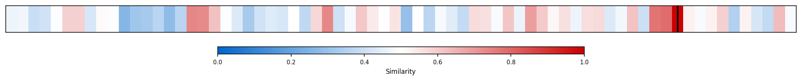
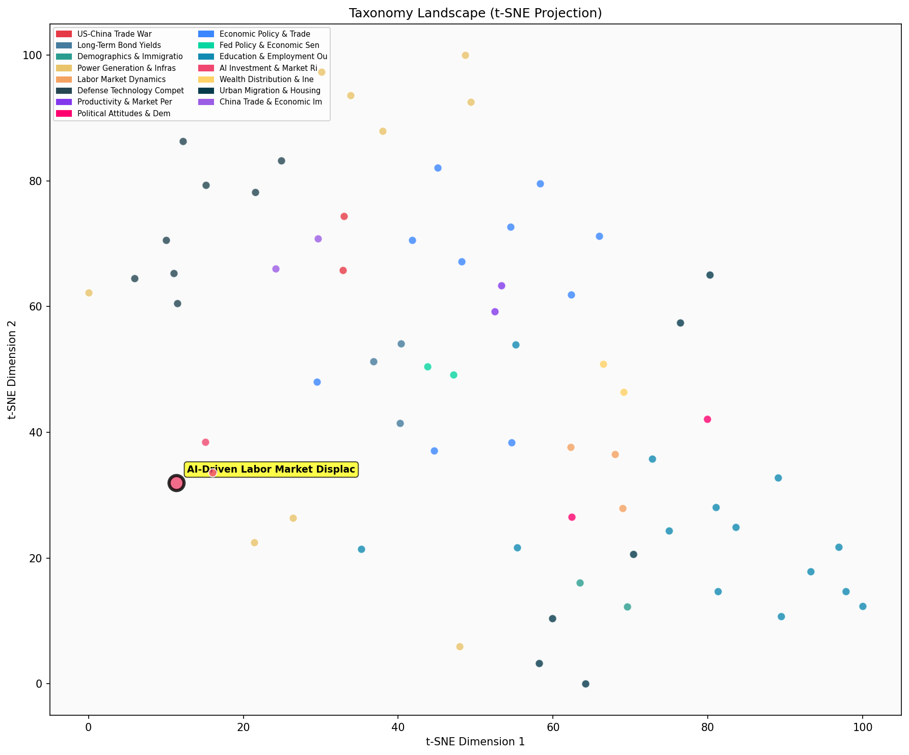

Description
This subcluster examines AI's immediate and emerging impacts on employment patterns, job displacement, and workforce dynamics. Articles analyze labor market data from Census Bureau surveys, job posting platforms like Adzuna, and employment statistics to document how AI adoption affects hiring, particularly for entry-level and younger workers. Key themes include sector-specific displacement effects, changing occupational demand patterns, and the differential impact on various demographic groups. Unlike sibling clusters focusing on capital investment flows or AI performance metrics, this subcluster emphasizes human workforce consequences, tracking employment shifts in AI-exposed sectors and documenting the transition from traditional automation to AI-driven labor market disruption.
Similarity to All 70 Subclusters
Each cell represents a subcluster. Color intensity shows similarity (blue=low, red=high). Black line marks current subcluster position.
Relationship to Primary Clusters
Average similarity to each of the 15 primary clusters. Larger area = stronger relationship to that cluster.
Taxonomy Landscape
All 70 subclusters positioned by similarity (t-SNE). Current subcluster highlighted with label. Click to enlarge.
Network Connections
Current subcluster at center, connected to related subclusters. Line thickness = similarity strength.
Most Representative Articles
-
1. .@ProfDavidDeming and @LHSummers find higher “churn” in the labor market over 2010-2024 relative to
-
2. In the 20% of occupations most exposed to AI, employment of 22- to 25-year-olds declined 6% since la
-
3. Research shows AI's impact is more pronounced at the firm level, where businesses suited to AI adopt
-
4. As the American workforce shrinks relative to the economy @pkedrosky @defrag argue the number of wor
-
5. .@McKinsey forecasts that generative AI could accelerate US productivity growth to 3.6% CAGR between
Edge Cases (Boundary Articles)
-
1. .@davidautor et al. find that the labor-replacing impact of automation innovations has intensified iThis article is borderline because while it discusses automation's labor-replacing effects (relevant to displacement), it focuses more broadly on the balance between labor-replacing versus demand-augmenting technological innovations over four decades, which aligns more closely with productivity and innovation dynamics than with AI-specific workforce displacement patterns. The research examines fundamental innovation mechanisms and their economic effects rather than analyzing specific employment data or AI-driven job market changes.
-
2. Deming argues that the drop in headcount of software developers aged 22–25 may merely be a reflectioThis article is borderline because while it discusses employment patterns among software developers (relevant to AI-driven displacement), it focuses specifically on challenging the methodology and interpretation of age-cohort data rather than examining AI's actual impact on labor markets. The content is more about research methodology and statistical interpretation than about AI-driven workforce changes, making it potentially better suited for the education-level labor outcomes cluster which may better accommodate demographic analysis approaches.
-
3. Crane et al find that existing studies of AI adoption by firms and workers show that between 20-40%This article is borderline because it focuses on AI adoption rates and usage patterns among workers rather than actual job displacement or employment effects that the cluster is designed to capture. While AI adoption is a precursor to potential labor market displacement, the article presents descriptive statistics about current usage rather than analyzing the displacement impacts or workforce dynamics that define the cluster's core focus.
Original Dendrogram